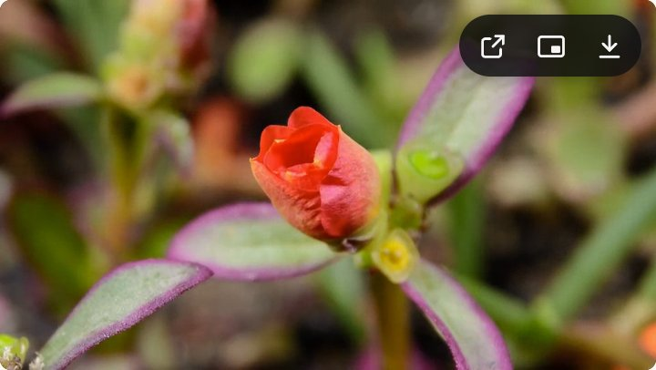
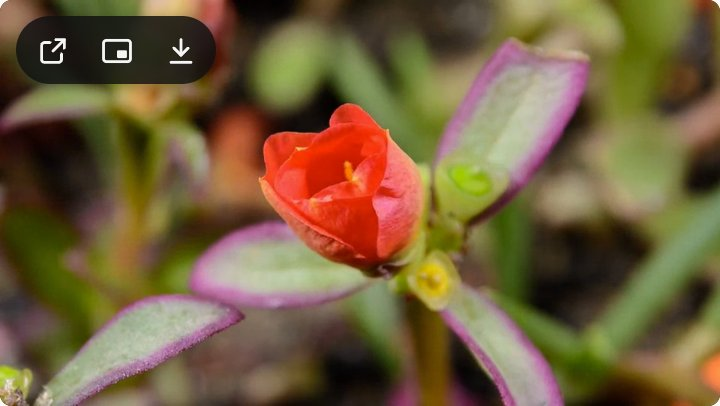

Hover any video, pop it out, and keep watching while you scroll.
1. Hover any video
Buttons appear in the video's top corner. They fade when your mouse rests.

Top right (default)

Top left
Pick a side in the extension menu.
- Pop out into a floating window, right where the video was
- Picture in picture, Chrome's always-on-top window
- Download, on regular video files only
2. Drag and resize
Drag to move, pull any edge to resize, close to put it back. Hold Shift to change the shape.
Other ways to pop out
Alt+Shift+V or Option+Shift+V on Mac
Reload
Save as...
Pop out video
Inspect
Right-click a video
Draggable Video Pop Out
Pop out all videos
Or use the extension menu
Pin it for quick settings
Extensions
Draggable Video Pop Out: Floating Picture in Picture Player
Click the puzzle icon by your address bar, then the pin.